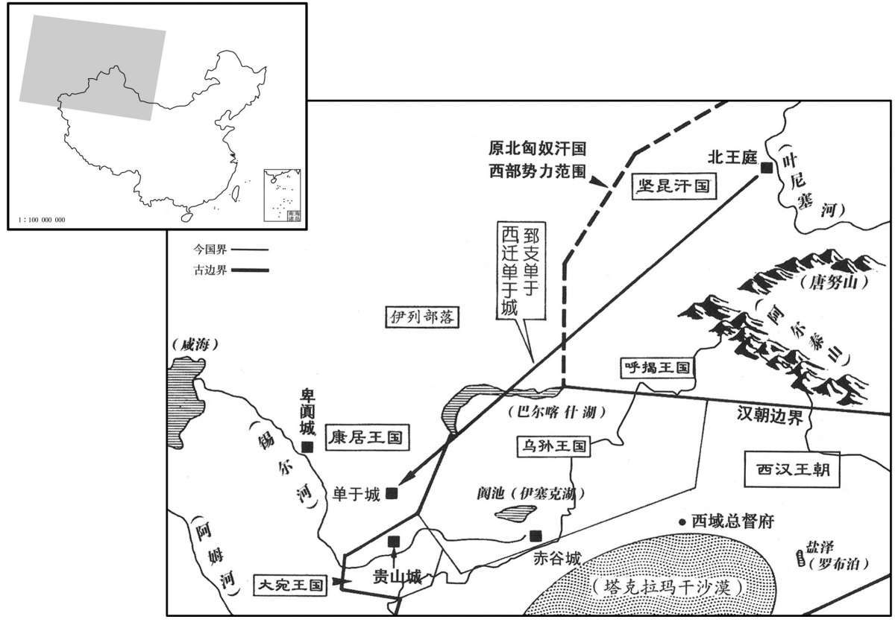

公元前44年资治通鉴：本年记事、原文与白话对照
按原书编年位置阅读；追叙和史论不等于本年发生的事件。白话采用所据译本，缺译不以生成译文补齐。
卷28 · 本年记事
公元前44年 · 汉孝元皇帝初五年
五年〔（丁丑、前四四）〕
上传本卷混有白话和仅古文部分；已恢复可核对的白话，古文不当作白话。
上传原文的注释括号有异常，字符原样保留；无法可靠划分的段落默认全文显示。
本年事件索引（现代整理）

本年形势与背景参考图
春，正月，以周子南君为周承休侯。〔文颖曰：姓姬，名延；其祖父姬嘉，本周后，武帝元鼎四年封为周子南君，奉周祀。师古曰:承休侯国，在颍川郡。〕
本段缺少可靠对应白话，原文完整保留；未使用生成译文。
上〔【章：乙十一行本“上”上有“三月”二字；孔本同；张校同；退斋校同；传校同。】〕行幸雍，〔雍，于用翻。〕祠五畤。〔畤，音止。〕
本段缺少可靠对应白话，原文完整保留；未使用生成译文。
夏，四月，有星孛于参。〔孛，蒲内翻。天文志：参为白虎，三星直者是为衡石；下有三星锐，曰罚，为斩艾事，其外四星，左右肩、股也。参，所今翻。〕
本段缺少可靠对应白话，原文完整保留；未使用生成译文。
上用诸儒贡禹等之言，诏太官毋日杀，〔师古曰：不得日日宰杀。〕所具各灭半；〔师古曰：餐具也。〕乘舆秣马，无乏正事而已。〔师古曰：秣，养马以粟秣食之也。正事，谓驾供祭祀、搜狩之事，非游田者也。乘，绳证翻。秣，音末。〕罢角抵、上林宫馆希御幸者、〔角抵，见二十一卷武帝元封三年。〕齐三服官、北假田官、〔李斐曰：主假赁见官田与民，收其假税也，故置田农之官。晋灼曰：匈奴传：秦始皇渡河，据阳山、北假中。王莽传：五原、北假膏壤殖谷。北假，地名。师古曰：晋说是也。郦道元曰：自高阙以东，夹山带河，阳山以西，皆北假也。〕盐铁官、常平仓。〔武帝置盐铁官。宣帝置常平仓。〕博士弟子毋置员，以广学者；〔武帝为博士官置弟子五十人。昭帝增弟子员满百人。宣帝末，增倍之。令〔今〕不限员数以广学者。后数年，以用度不足，更为设员千人。〕令民有能通一经者，皆复。〔复，方目翻。〕省刑罚七十余事。
本段缺少可靠对应白话，原文完整保留；未使用生成译文。
陈万年卒。六月，辛酉，长信少府贡禹为御史大夫。禹前后言得失书数十上，〔上，时掌翻。〕上嘉其质直，多采用之。
本段缺少可靠对应白话，原文完整保留；未使用生成译文。
匈奴郅支单于自以道远，又怨汉拥护呼韩邪而不助己，困辱汉使者江乃始等；遣使奉献，因求侍子。〔郅支遣子入侍，见上卷宣帝甘露元年。〕汉议遣卫司马谷吉送之，〔谷，姓也。〕御史大夫贡禹、博士东海匡衡以为：「郅支单于卿化未醇，〔师古曰：不杂曰醇。醇，壹也，厚也。乡，读曰向；下同。〕所在绝远，宜令使者送其子，至塞而还。」〔还，从宣翻，又如字。〕吉上书言：「中国与夷狄有羁縻不绝之义，今既养全其子十年，德泽甚厚，空绝而不送，近从塞还，示弃捐不畜，〔畜，许六翻。〕使无乡从之心，〔师古曰：乡从，谓向化而从命也。〕弃前恩，立后怨，不便！议者见前江乃始无应敌之数，智勇俱困，以致耻辱，即豫为臣忧。臣幸得建强汉之节，承明圣之诏，宣谕厚恩，不宜敢桀。〔师古曰：言郅支畏威，当不敢桀猾也。〕若怀禽兽心，加无道于臣，则单于长婴大罪，〔师古曰：婴，犹带也。〕必遁逃远舍，〔师古曰：舍，止也。〕不敢近边。〔近，其靳翻。〕没一使以安百姓，国之计，臣之愿也。愿送至庭。」〔郅支单于庭也。〕上许焉。既至，郅支单于怒，竟杀吉等；〔考异曰：陈汤传：「初元四年，郅支求侍子。」元帝纪：「五年，谷吉使匈奴，不还。」汤传又云：「御史大夫贡禹议吉不可遣。」按禹今年六月始为御史大夫，或者郅支以明年求侍子，而吉以五年使匈奴也！」自知负汉，又闻呼韩邪益强，恐见袭击，欲远去。会康居王数为乌孙所困，〔数，所角翻；下同。〕与诸翕侯计，以为：「匈奴大国，乌孙素服属之。今郅支单于困阨在外，可迎置东边，使合兵取乌孙而立之，〔师古曰：言与郅支并力共灭乌孙，以其地立郅支，令居之也。〕长无匈奴忧矣。」即使使至坚昆，通语郅支。〔宣帝黄龙元年，郅支都坚昆。〕郅支素恐，又怨乌孙，〔怨乌孙事亦见上卷黄龙元年。〕闻康居计，大说，〔说，读曰悦。〕遂与相结，引兵而西。郅支人众中寒道死，余财三千人。〔师古曰：中寒，伤于寒也。道死，死于道上也。中，竹仲翻。财，与纔同。〕到康居，康居王以女妻郅支；郅支亦以女予康居王。〔妻，七细翻。予，读曰与。〕康居甚尊敬郅支，欲倚其威以胁诸国。郅支数借兵击乌孙，深入至赤谷城，杀略民人，驱畜产去。〔师古曰：驱，与驱同。〕乌孙不敢追，西边空虚不居者五千里。〔西域传：乌孙国，治赤谷城，西至康居蕃地五千里。若云空虚者五千里，则自赤谷以西皆不居矣。此已抵其国都，不得云西边也。陈汤传作「且千里」，当从之。〕
本段缺少可靠对应白话，原文完整保留；未使用生成译文。
冬，十二月，丁未，页禹卒。丁巳，长信少府薛广德为御史大夫。
本段缺少可靠对应白话，原文完整保留；未使用生成译文。
译本所载内容待核对（不作白话）
春，正月，以周子南君为周承休侯。三月，上行幸雍，祠五畤。
夏，四月，有星孛于参。
上用诸儒贡禹等之言，诏太官毋日杀，所具各减半；乘舆秣马，无乏正事而已。罢角抵、上林宫馆希御幸者、齐三服官、北假田官、盐铁官、常平仓。博士弟子毋置员，以广学者。令民有能通一经者。皆复。省刑罚七十馀事。
陈万年卒。六月，辛酉，长信少府贡禹为御史大夫。禹前后言得失书数十上，上嘉其质直，多采用之。
匈奴郅支单于自以道远，又怨汉拥护呼韩邪而不助己，困辱汉使者乾江乃始等；遣使奉献，因求侍子。汉议遣卫司马谷吉送之，御史大夫贡禹、博士东海匡衡以为：“郅支单于乡化末醇，所在绝远，宜令使者送其子，至塞而还。”吉上书言：“中国与夷狄有羁縻不绝之义，今既养全其子十年，德泽甚厚，空绝而不送，近从塞还，示弃捐不畜，使无乡从之心，弃前恩，立后怨，不便。议者见前江乃无应敌之数，智勇俱困，以致耻辱，即豫为臣忧。臣幸得建强汉之节，承明圣之诏，宣谕厚恩，不宜敢桀。若怀禽兽心，加无道于臣，则单于长婴大罪，必遁逃远舍，不敢近边。没一使以安百姓，国之计，臣之愿也。愿送到庭。”上许焉。既到，郅支单于怒，竟杀吉等；自知负汉，又闻呼韩邪益强，恐见袭击，欲远去。会康居王数为乌孙所困，与诸翕侯计，以为：“匈奴大国，乌孙素服属之。今郅支单于困在外，可迎置东边，使合兵取乌孙而立之，长无匈忧矣。”即使使到坚昆，通语郅支。郅支素恐，又怨乌孙，闻康居计，大说，遂与相结，引兵而西。郅支人众中寒道死，馀财三千人。到康居，康居王以女妻郅支，郅支亦以女予康居王，康居甚尊敬郅支，欲倚其威以胁诸国。郅支数借兵击乌孙，深入至谷城，杀略民人，驱畜产去。乌孙不敢追。西边空虚不居者五千里。
冬，十二月，丁末，贡禹卒。丁已，长信少府薛广德为御史大夫。